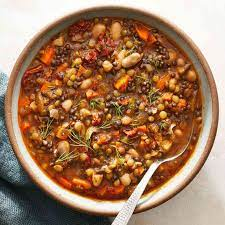

Veggie lentil soup

Description
This a wonderful recipe for lentil soup with vegetables. This dish takes about 45 minutes to cook.
Ingredients
- An onion and some garlic
- Lentils
- Some vegetables like carrots or asparagus or celery
- Vegetable broth
- Diced tomatoes
Steps
- Chop onions, garlic, and veggies.
- Add some olive oil to pot set to medium heat and add onions, garlic, and veggies. Cook until onions turn color.
- Add diced tomatoes, lentils, and broth to pot. Cover the pot.
- Once the pot starts to boil, turn down heat. Cook for about 20-30 more minutes.